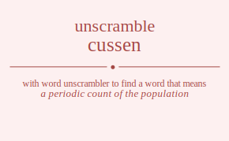

The word found after unscrambling cussen means that a periodic count of the population, conduct a census, .

The word found after unscrambling cussen means that a periodic count of the population, conduct a census, .
You can also find solutions for different combinations of letters in cussen like cussen cussne cusesn cusens cusnse cusnes cussen cussne cusesn cusens cusnse cusnes cuessn cuesns cuessn cuesns cuenss cuenss cunsse cunses cunsse cunses cuness cuness csusen csusne csuesn csuens csunse csunes cssuen cssune csseun cssenu cssnue cssneu cseusn cseuns csesun csesnu csenus csensu csnuse csnues csnsue csnseu csneus csnesu csusen csusne csuesn csuens csunse csunes cssuen cssune csseun cssenu cssnue cssneu cseusn cseuns csesun csesnu csenus csensu csnuse csnues csnsue csnseu csneus csnesu ceussn ceusns ceussn ceusns ceunss ceunss cesusn cesuns cessun cessnu cesnus cesnsu cesusn cesuns cessun cessnu cesnus cesnsu cenuss cenuss census censsu census censsu cnusse cnuses cnusse cnuses cnuess cnuess cnsuse cnsues cnssue cnsseu cnseus cnsesu cnsuse cnsues cnssue cnsseu cnseus cnsesu cneuss cneuss cnesus cnessu cnesus cnessu ucssen ucssne ucsesn ucsens ucsnse ucsnes ucssen ucssne ucsesn ucsens ucsnse ucsnes ucessn ucesns ucessn ucesns ucenss ucenss ucnsse ucnses ucnsse ucnses ucness ucness uscsen uscsne uscesn uscens uscnse uscnes usscen usscne ussecn ussenc ussnce ussnec usecsn usecns usescn usesnc usencs usensc usncse usnces usnsce usnsec usnecs usnesc uscsen uscsne uscesn uscens uscnse uscnes usscen usscne ussecn ussenc ussnce ussnec usecsn usecns usescn usesnc usencs usensc usncse usnces usnsce usnsec usnecs usnesc uecssn uecsns uecssn uecsns uecnss uecnss uescsn uescns uesscn uessnc uesncs uesnsc uescsn uescns uesscn uessnc uesncs uesnsc uencss uencss uenscs uenssc uenscs uenssc uncsse uncses uncsse uncses uncess uncess unscse unsces unssce unssec unsecs unsesc unscse unsces unssce unssec unsecs unsesc unecss unecss unescs unessc unescs unessc scusen scusne scuesn scuens scunse scunes scsuen scsune scseun scsenu scsnue scsneu sceusn sceuns scesun scesnu scenus scensu scnuse scnues scnsue scnseu scneus scnesu sucsen sucsne sucesn sucens sucnse sucnes suscen suscne susecn susenc susnce susnec suecsn suecns suescn suesnc suencs suensc suncse sunces sunsce sunsec sunecs sunesc sscuen sscune ssceun sscenu sscnue sscneu ssucen ssucne ssuecn ssuenc ssunce ssunec ssecun ssecnu sseucn sseunc ssencu ssenuc ssncue ssnceu ssnuce ssnuec ssnecu ssneuc secusn secuns secsun secsnu secnus secnsu seucsn seucns seuscn seusnc seuncs seunsc sescun sescnu sesucn sesunc sesncu sesnuc sencus sencsu senucs senusc senscu sensuc sncuse sncues sncsue sncseu snceus sncesu snucse snuces snusce snusec snuecs snuesc snscue snsceu snsuce snsuec snsecu snseuc snecus snecsu sneucs sneusc snescu snesuc scusen scusne scuesn scuens scunse scunes scsuen scsune scseun scsenu scsnue scsneu sceusn sceuns scesun scesnu scenus scensu scnuse scnues scnsue scnseu scneus scnesu sucsen sucsne sucesn sucens sucnse sucnes suscen suscne susecn susenc susnce susnec suecsn suecns suescn suesnc suencs suensc suncse sunces sunsce sunsec sunecs sunesc sscuen sscune ssceun sscenu sscnue sscneu ssucen ssucne ssuecn ssuenc ssunce ssunec ssecun ssecnu sseucn sseunc ssencu ssenuc ssncue ssnceu ssnuce ssnuec ssnecu ssneuc secusn secuns secsun secsnu secnus secnsu seucsn seucns seuscn seusnc seuncs seunsc sescun sescnu sesucn sesunc sesncu sesnuc sencus sencsu senucs senusc senscu sensuc sncuse sncues sncsue sncseu snceus sncesu snucse snuces snusce snusec snuecs snuesc snscue snsceu snsuce snsuec snsecu snseuc snecus snecsu sneucs sneusc snescu snesuc ecussn ecusns ecussn ecusns ecunss ecunss ecsusn ecsuns ecssun ecssnu ecsnus ecsnsu ecsusn ecsuns ecssun ecssnu ecsnus ecsnsu ecnuss ecnuss ecnsus ecnssu ecnsus ecnssu eucssn eucsns eucssn eucsns eucnss eucnss euscsn euscns eusscn eussnc eusncs eusnsc euscsn euscns eusscn eussnc eusncs eusnsc euncss euncss eunscs eunssc eunscs eunssc escusn escuns escsun escsnu escnus escnsu esucsn esucns esuscn esusnc esuncs esunsc esscun esscnu essucn essunc essncu essnuc esncus esncsu esnucs esnusc esnscu esnsuc escusn escuns escsun escsnu escnus escnsu esucsn esucns esuscn esusnc esuncs esunsc esscun esscnu essucn essunc essncu essnuc esncus esncsu esnucs esnusc esnscu esnsuc encuss encuss encsus encssu encsus encssu enucss enucss enuscs enussc enuscs enussc enscus enscsu ensucs ensusc ensscu enssuc enscus enscsu ensucs ensusc ensscu enssuc ncusse ncuses ncusse ncuses ncuess ncuess ncsuse ncsues ncssue ncsseu ncseus ncsesu ncsuse ncsues ncssue ncsseu ncseus ncsesu nceuss nceuss ncesus ncessu ncesus ncessu nucsse nucses nucsse nucses nucess nucess nuscse nusces nussce nussec nusecs nusesc nuscse nusces nussce nussec nusecs nusesc nuecss nuecss nuescs nuessc nuescs nuessc nscuse nscues nscsue nscseu nsceus nscesu nsucse nsuces nsusce nsusec nsuecs nsuesc nsscue nssceu nssuce nssuec nssecu nsseuc nsecus nsecsu nseucs nseusc nsescu nsesuc nscuse nscues nscsue nscseu nsceus nscesu nsucse nsuces nsusce nsusec nsuecs nsuesc nsscue nssceu nssuce nssuec nssecu nsseuc nsecus nsecsu nseucs nseusc nsescu nsesuc necuss necuss necsus necssu necsus necssu neucss neucss neuscs neussc neuscs neussc nescus nescsu nesucs nesusc nesscu nessuc nescus nescsu nesucs nesusc nesscu nessuc.
Unscramble Words is registered trademark.